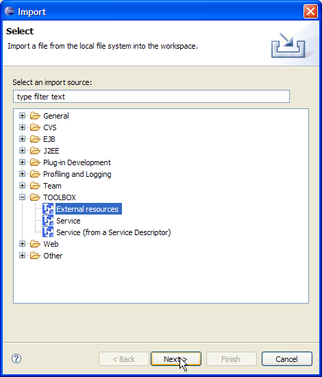
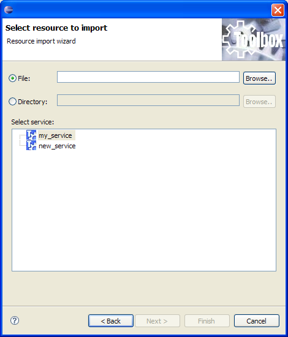

Resources like XSL,XML and additional tscript file (etc) can be imported into the service. This will let you easily manage all resources that builds the service logic and let you easily deploy/move the service on machines. Since all resources are stored under the <service>/Resources/ directory and packaged into the export descriptor it is clear that this will ease the development and the maintenace of the service. Using the tag <path> retrieving resources is made even more easier (see here). To import an external resource select "Import" from the "Edit" menu. The following dialog is shown:

Select "TOOLBOX/External Resources" and click "Next". The next page (shown below) will let you specify what shall be imported (a file or a compete directory) and where shall be stored (specifically which project import them)

Clicking on the "Finish" button finalizes the procedure.